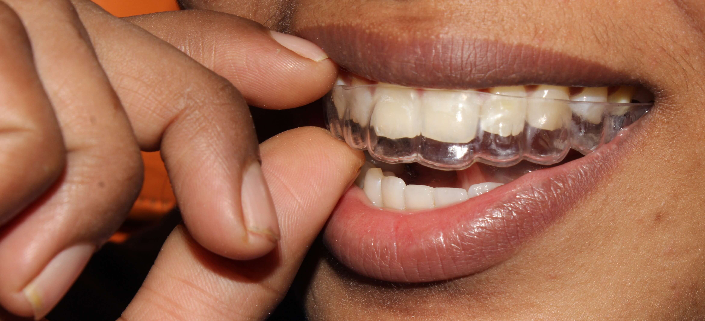
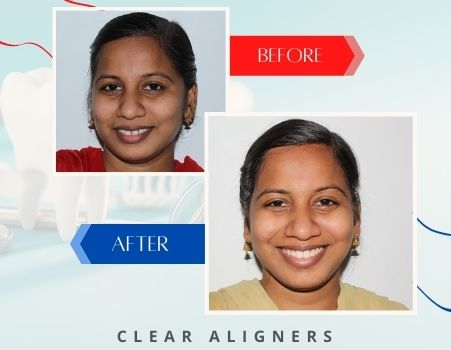

It’s ideal as a stand-alone treatment or to pre-align teeth before further cosmetic options such as Teeth Whitening, Edge Bonding, Direct Veneers ,or Indirect veneers.
SureSmile clear aligners are the perfect solution for crowding, protrusion, gaps, and mild bite issues. Your teeth are gently guided to an ideal position using digitally planned custom trays — efficient, safe, and virtually invisible.
Treatment duration: Simple cases complete in 6-18 weeks, complex cases in 6-18 months. Wear aligners 20-22 hours daily with check-ups every 2-3 weeks at our Nanganallur clinic. Since aligners are removable, they fit easily into any professional or social lifestyle. Retention is recommended after treatment to maintain results.

During your consultation at Sriram Dental, Nanganallur, Prof. Dr. Vijjaykanth will use our PrimeScan digital scanner to determine if SureSmile aligners are right for your case. Call 044-43592202 or WhatsApp 6385105240 to book.